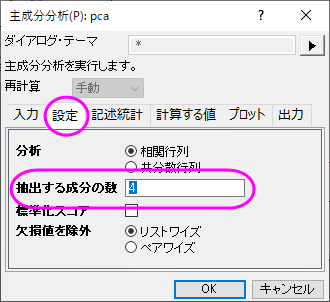

主成分分析
Principal-Component-Analysis
概要
主成分分析は、基礎となる線形構造を持つ大規模な多変量データセットを削減したり解釈したりするほか、それまで思いもよらなかった関係性を発見するのに役立ちます。
ここでは、21のヨーロッパ諸国における9つの食品群についてタンパク質消費を測定したデータを使用します。 主成分分析を使用して、タンパク源とヨーロッパ諸国との関係を調べます。
メソッドを選ぶ
残す主成分の数を決定するには、最初に主成分分析を実行し、その結果に基づいて処理を進めます。
- 新しいプロジェクトまたは新しいワークブックを開きます。 Originのプログラムフォルダにある、\samples\Statistics\Protein Consumption in Europe.datファイルをインポートします。
- ワークシート全体を選択して、統計: 多変量解析: 主成分分析を選択します。
- 開いたダイアログの設定はデフォルトのままにして、 OKをクリックします。
- PCAレポートシートを選択します。
- 相関行列の固有値表から、初めの4つの主成分が分散の86%を説明しており、残りの主成分はそれぞれ5%かそれ以下の貢献度であることが分かります。 上位4つの主成分を残すことにします。
- スクリープロットは視覚的に主成分の的確な数を判断するのに便利です。 主成分の数はポイントで表わされ、「曲がり角」より下の固有値は全体への割合が小さく、全て同じぐらいの大きさになります。 このスクリープロットではあまり明白ではありませんが、4番目の点が「曲がり角」の点であると言えます。
- 結果シートの錠前のアイコン
 をクリックし、パラメータを変更をコンテキストメニューから選びます。 設定タブで、抽出する成分の数を4に設定します。 次のステップで主成分プロットの設定をするので、ダイアログを閉じないでください。
をクリックし、パラメータを変更をコンテキストメニューから選びます。 設定タブで、抽出する成分の数を4に設定します。 次のステップで主成分プロットの設定をするので、ダイアログを閉じないでください。
- 
主成分プロットを作成する
ダイアログのプロットタブでは、ユーザがスクリープロットと主成分プロットを作成するか、選ぶことができます。
- スクリープロット
- スクリープロットは視覚的に主成分の的確な数を判断するのに便利です。
- 成分プロット
- 成分プロットは各観測点の成分スコアまたは、主成分ペアの各変数の成分ローディングを示します。 どの成分のペアをプロットするか、主成分を選択してプロットのグループ内で指定できます。 成分プロットは以下を含みます。
- ローディングプロット
- ローディングプロットは元の値とサブスペースの次元の関係性を示しています。 変数間の関係を読み取るのに使用されます。
- スコアプロット
- スコアプロットはデータをサブスペースに投影するものです。 観測値間の関係を読み取るのに使用されます。
- バイプロット
- バイプロットはあらかじめ選択されたローディングとスコアの成分を平行にして表示するものです。
- 先程のステップで開いたダイアログの中で、プロットタブを開きます。 スクリープロット、ローディングプロット、バイプロットが選択されていることを確認してください。
- 最初の2つの成分は一般的に、分散のほとんどの割合を占めます。 よって、初めの2つの主成分の空間に成分プロットを作図することにします。 主成分を選択してプロットグループ内では、X軸の主成分に1を、Y軸の主成分には２を選びます。 OKをクリックします。
結果の解釈
- 相関行列より、それぞれの数値は大きく相関していることが分かります。 多くの値は0.3よりも大きくなっています。 主成分分析は共線性を取り除くのに適している分析であるといえます。
- 主成分の値は、元の値の線形（1次的な）組み合わせによって定義されています。 抽出固有ベクトル表が数式の係数を示しています。

- ローディングプロットは、最初の2つの成分の空間での変数間の関係を明らかにします。 このローディングプロットではRed Meat （赤肉）、Eggs（卵）、Milk（牛乳）、そしてWhite Meat（白肉）は主成分1に対して同じように重い負荷を持っていることが分かります。 一方、Fish（魚）、Fruit（果物）とVegetables（野菜）は主成分２に対して重い負荷があることが分かります。
- バイプロットはあらかじめ選択されたローディングとスコアの成分を平行にして表示するものです。 これはサブスペース上の1つの観測値の投影をスコア点と表しています。 初めの2つの主成分のサブスペースにおける観測値と変数の比率を見つけることができます。 (Note: グラフをダブルクリックして開き、編集が可能です)
- データリーダツールを使用してデータ情報ウィンドウを開き、プロットをより詳しく確認します。データポイントをクリックして、各国の成分スコアを読み取ります。スペインとポルトガルのタンパク源は他のヨーロッパの国々とは異なっていることが分かります。 スペインとポルトガルは果物と野菜からタンパク質を得ているのに対し、東ヨーロッパの国々、例えばアルバニア、ブルガリア、ユーゴスラビア、ルーマニアでは穀類とナッツ類からタンパク質を得ています。
上記のデータ情報ウィンドウのように国名を表示するには、次のように操作してください。
- データ情報ウィンドウ内で右クリックし、ユーザ設定を選択します。
- Countryを左側のパネルから選択し、選択ボタン（右向き矢印）をクリックしてデータ情報ウィンドウに追加し、OKをクリックします。
Note: Origin 2019から、データポイント上にカーソルを合わせると、データポイントの座標情報のツールチップが表示されます。ツールチップとデータ情報ウィンドウは両方ともカスタマイズ可能です。詳細情報は、データ情報ウィンドウとデータポイントツールチップを参照してください。
|
3D主成分プロットを作成する
- 結果シートの錠前のアイコンをクリックし、パラメータを変更をコンテキストメニューから選びます。
- プロットタブにて、主成分プロットのタイプを3Dに設定します。そして、Z軸の主成分に4と入力します。
- OKをクリックして、ダイアログを閉じます。すると、PCAプロットデータと3Dローディングプロットが次のように作成されます。